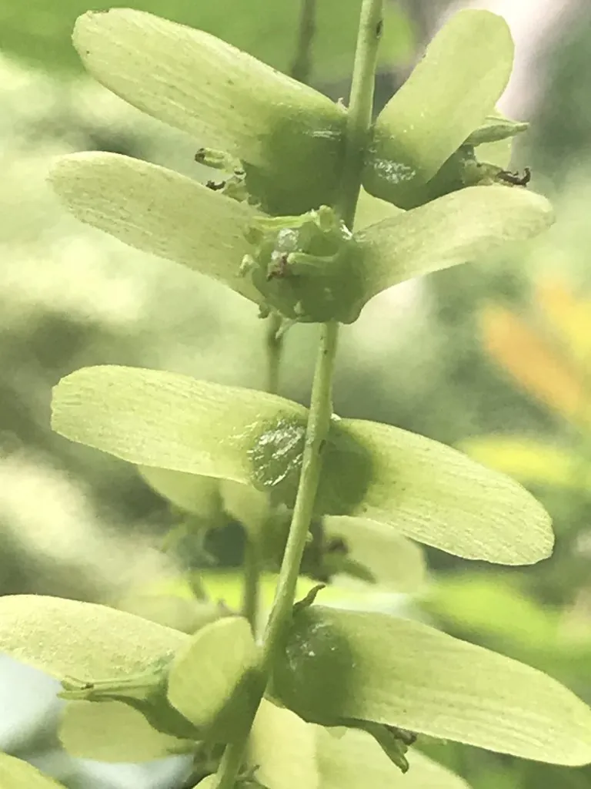

乔木 · 植物界
枫杨 Pterocarya stenoptera

胡桃科枫杨属落叶乔木，羽状复叶的叶轴具狭翅，果序下垂如串串元宝，是常见的护岸与行道树种。
- 分类
- 门被子植物门纲木兰纲目壳斗目科胡桃科属枫杨属
- 栖息环境
- 溪边、河岸与低湿平地，喜光喜湿，耐水湿
- 地理分布
- 中国华北、华东、华中、华南及西南各地；朝鲜半岛
- 保护级别
- 暂无评估；未被列入国家重点保护野生植物名录
物种志
枫杨为胡桃科枫杨属落叶乔木，高可达三十米，树皮灰褐色、纵裂，小枝有柔毛。奇数羽状复叶，小叶五至十对，长椭圆形，边缘有细锯齿，叶轴具狭翅，这是其显著特征。花单性，雌雄同株，雄花序葇荑状下垂，雌花序顶生，花期四至五月；坚果具双翅，排列成下垂的长果序，形似元宝，果期八至九月。
枫杨分布于中国华北、华东、华中、华南及西南各地，朝鲜半岛也有，多生于溪边、河岸和低湿平地。它喜光、喜湿润，耐水湿，适宜深厚肥沃的砂质壤土，根系发达，固土护岸能力强。木材轻软，可制家具、火柴杆和造纸；树皮纤维可制绳；叶可作农药，果实可榨油。枫杨生长快、树冠宽广，是河岸防护林和行道绿化的重要树种。
形态与习性
- 株高可达 30 m，树冠宽广
- 花期4–5 月，葇荑花序下垂
- 果期8–9 月，坚果具双翅
- 光照喜光，幼树稍耐阴
- 水分喜湿润，耐水湿
- 土壤深厚肥沃的砂质壤土
- 主要用途护岸林、行道树，木材制器具
趣味知识
- 枫杨的叶轴两侧有狭翅，这是识别它最直观的特征。
- 它的果序下垂如串串元宝，因此民间又称其为元宝树。
- 枫杨根系发达、耐水淹，常被种在河堤和水库岸边固土护岸。